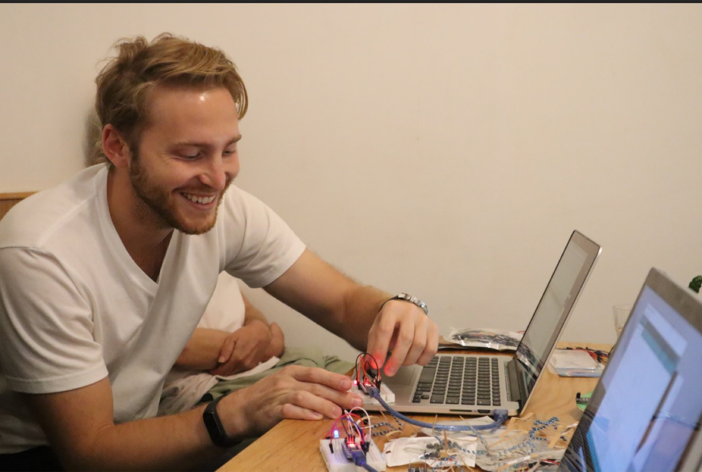
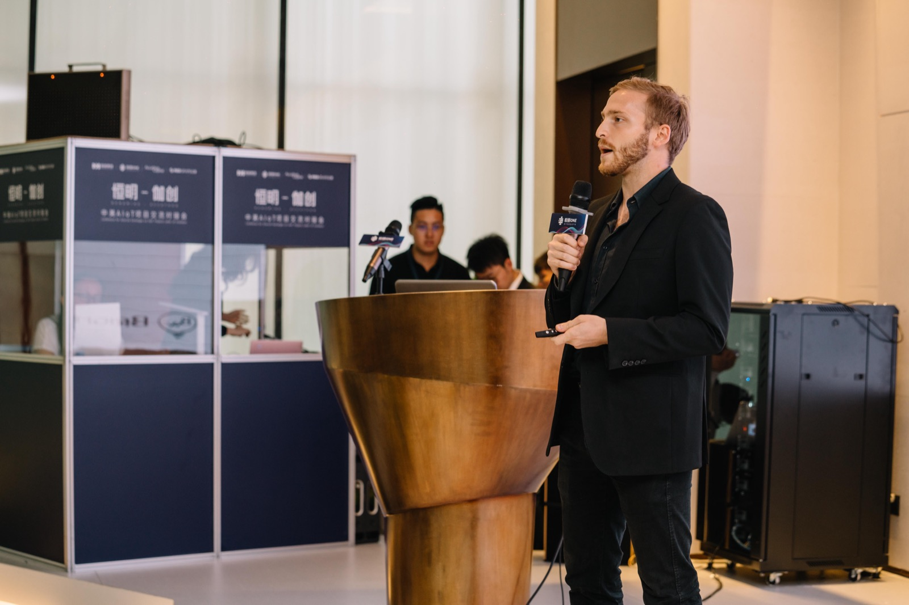
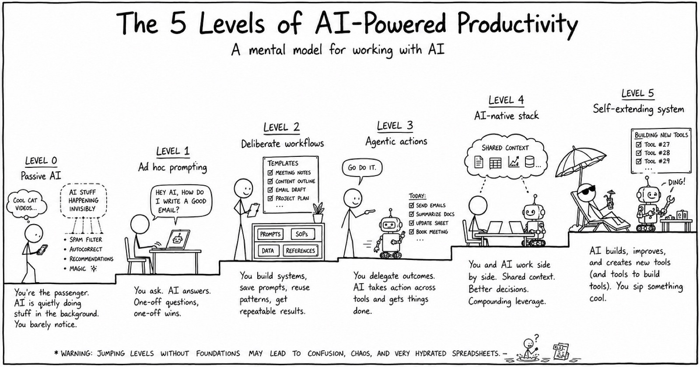

Founder · Builder · Explorer
Building things,
one city at a time.
Repeat founder who loves turning ideas into products. Washington DC native, shaped by five years in Shenzhen, now putting down roots in New York.

The Journey
Washington, DC
Where it started
Born and raised. The place that gave me my hustle and first taste of how systems and institutions actually work.
Shenzhen
5+ years in China
The hardware capital of the world. Learned to build fast, ship faster, and navigate a completely different way of doing business.
New York
Setting down roots
Home base. Where the energy of the city meets everything I've learned — building the next chapter from here.


85+
Countries visited
Curiosity doesn't stop at borders.
About
I'm a repeat founder drawn to the intersection of technology, design, and what people actually need. I've built products from zero across hardware and software — from factory floors in China to launch days in the US.
Interests
0 → 1
Products
Hardware
Culture
Startups
Venture Capital
NYC
Smart Homes
AI / ML
Travel
Blockchain
Governance
Music
Books
What I'm Up To Now
Looking to build.
Currently in exploration mode — researching markets, talking to users, and looking for the next thing to start or a team to join. In parallel, working on connecting AI deeper into my personal productivity stack. Open to connecting with builders and operators.
